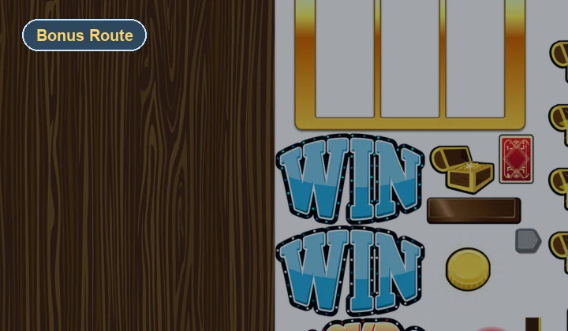
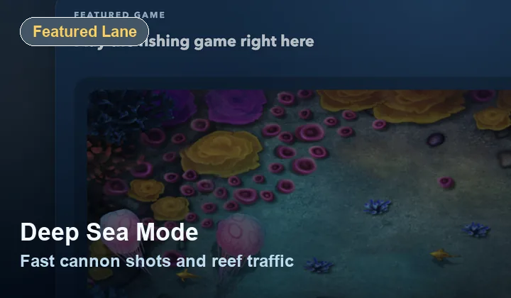
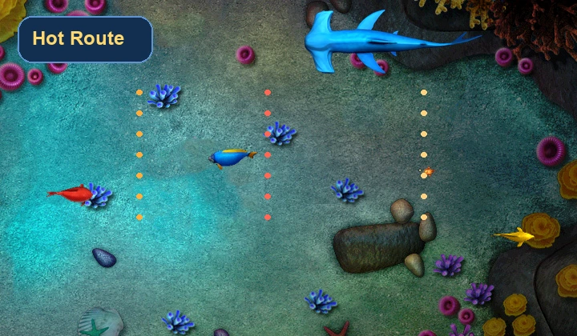
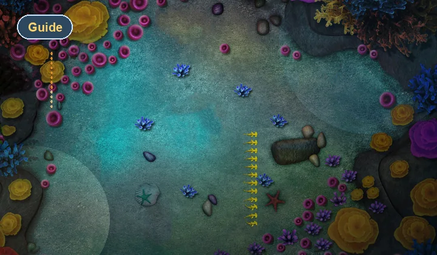

Arcade Branch
Bright, simple, different
The slot-style branch changes the session rhythm immediately. That makes the whole site feel more authentic than a portal that only offers near-identical pages around the same play loop.
Bonus Route
Want a different arcade rhythm? Classic Arcade links to a standalone fruit slot browser game. Open it in a separate tab, then return here when you want to switch back to the fishing game.
Launch Route
The slot game runs from its own page, so its controls and presentation stay separate from the fishing game.

Arcade Branch
The slot-style branch changes the session rhythm immediately. That makes the whole site feel more authentic than a portal that only offers near-identical pages around the same play loop.
Integration
The fruit slot game lives in its own static directory so it can keep its original runtime without colliding with the shared navigation and portal styling.
Portal Value
Visitors can treat Classic Arcade as a break route between fishing sessions, which is the kind of behavior real browser hubs are built to support.
What To Expect
Instead of tracking schools and firing at moving fish, you launch a slot-style browser game with brighter colors, quick reel feedback, and a more relaxed interaction rhythm.
Why Keep It
One genre is a game page. Multiple routes with distinct session moods start to feel like a portal. Classic Arcade helps close that gap.
Related Routes

Main Route
Return to the main ocean fishing lane when you want direct gameplay and a larger embedded canvas.

Fast Route
Pick up the pace again with a quicker-feeling fishing lane after your slot-style break.

Article
Read the category roundup if you want the editorial side of how browser portals mix play styles.
FAQ
Yes. It opens as a browser-based side route inside the same site structure.
Keeping the game isolated is the safest way to preserve its own runtime while the portal keeps a cleaner shared shell.
Yes. Mixed game moods and route variety are part of what makes browser arcade destinations feel real.
Next Clicks
Many visitors either jump back to Deep Sea Mode for focused fishing or open the blog to browse the longer guides before another session.